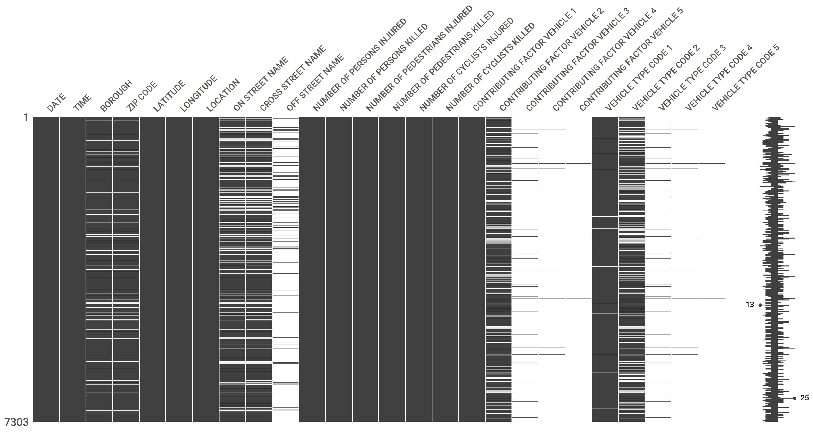
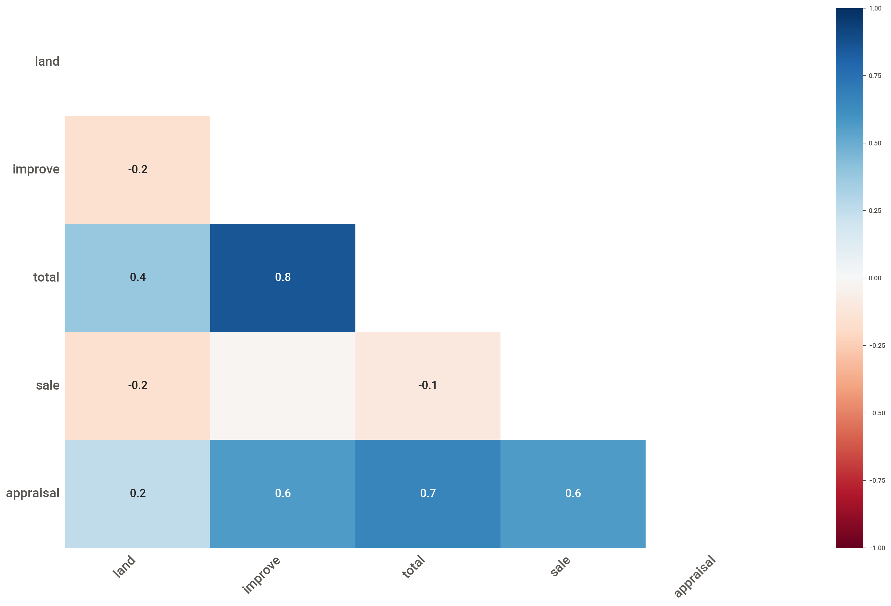

Data profiling is one of the first steps to take when you encounter a data set for the first time. It is how you kick-start the exploratory data analysis (EDA). (Borne 2021) refers to it as “having that first date with your data.” We are not looking to derive new insights from the data or to build amazing machine learning models at this stage; we want to create a high-level report of the data’s content and condition. We want to know what we are dealing with. Common questions and issues addressed during profiling are
Which variables (attributes) are in the data?
How many rows and columns are there?
Which variables are quantitative (represent numbers), and which variables are qualitative (represent class memberships)
Are qualitative variables coded as strings, objects, numbers?
Are there complex data types such as JSON documents, images, audio, video encoded in the data?
What are the ranges (min, max) of the variables. Are these reasonable or do they suggest outliers or measurement errors?
What is the distribution of quantitative variables?
What is the mean, median, and standard deviation of quantitative variables?
What are the unique values of qualitative variables?
Do coded fields such as ZIP codes, account numbers, email addresses, state codes have the correct format?
Are there attributes that have only a single value?
Are there duplicate entries?
Are there missing values in one or more variables?
What are the strengths and direction of pairwise associations between the variables?
Are some attributes perfectly correlated, for example, birthdate and age or temperatures in degree Celsius and degree Fahrenheit.
California Housing Prices
In this subsection we consider a data set on housing prices in California, based on the 1990 census and available on Kaggle. The data contain information about geographic location, housing, and population within blocks. California has over 8,000 census tracts and a tract can have multiple block groups. There are over 20,000 census block groups and over 700,000 census blocks in California.
The variables in the data are:
Variables in the California Housing Prices data set.
Variable
Description
longitude
A measure of how far west a house is; a higher value is farther west
latitude
A measure of how far north a house is; a higher value is farther north
housing_median_age
Median age of a house within a block; a lower number is a newer building
total_rooms
Total number of rooms within a block
total_bedrooms
Total number of bedrooms within a block
population
Total number of people residing within a block
households
Total number of households, a group of people residing within a home unit, for a block
median_income
Median income for households within a block of houses (measured in tens of thousands of US Dollars)
median_house_value
Median house value for households within a block (measured in US Dollars)
ocean_proximity
Location of house with respect to ocean/sea
The variable description is important metadata to understand the data. A variable such as totalRooms could be understood as the number of rooms in a building and the medianHouseValue could then mean the median of the houses that have that number of rooms. However, since the data are not for individual houses but blocks, totalRooms represents the sum of all the rooms in all the houses in that block.
We start data profiling a pandas DataFrame of the data with getting basic info and a listing of the first few observations.
import numpy as npimport pandas as pdCA_houses = pd.read_csv("../datasets/CaliforniaHousing_1990.csv")CA_houses.info()CA_houses.head()
We can immediately answer several questions about the data:
There are 20,640 rows and 10 columns
Except for ocean_proximity, which is of object type (string), all other variables are stored as 64-bit floats. Variables total_rooms, total_bedrooms, population, and households are naturally integers; since they appeared in the CSV file with a decimal point, they were assigned a floating point data type.
Only the total_bedrooms variable has missing values, 20,640 – 20,433 = 207 values for this variable are unobserved. This shows a high level of completeness of the data set. (More on missing values in the next section).
The listing of the first five observations confirms that variables are counts or sums at the block-level, rather than data for individual houses.
The latitude and longitude values differ in the second decimal place, suggesting that blocks (=rows of the data set) have unique geographic location, but we cannot be sure.
The ocean_proximity entries are in all caps. We want to see the other values in that column to make sure the entries are consistent. Knowing the format of strings is important for filtering (selecting) or grouping observations.
The next step is to use pandas describe() function to compute basic summaries of the variables.
CA_houses.describe()
longitude
latitude
housing_median_age
total_rooms
total_bedrooms
population
households
median_income
median_house_value
count
20640.000000
20640.000000
20640.000000
20640.000000
20433.000000
20640.000000
20640.000000
20640.000000
20640.000000
mean
-119.569704
35.631861
28.639486
2635.763081
537.870553
1425.476744
499.539680
3.870671
206855.816909
std
2.003532
2.135952
12.585558
2181.615252
421.385070
1132.462122
382.329753
1.899822
115395.615874
min
-124.350000
32.540000
1.000000
2.000000
1.000000
3.000000
1.000000
0.499900
14999.000000
25%
-121.800000
33.930000
18.000000
1447.750000
296.000000
787.000000
280.000000
2.563400
119600.000000
50%
-118.490000
34.260000
29.000000
2127.000000
435.000000
1166.000000
409.000000
3.534800
179700.000000
75%
-118.010000
37.710000
37.000000
3148.000000
647.000000
1725.000000
605.000000
4.743250
264725.000000
max
-114.310000
41.950000
52.000000
39320.000000
6445.000000
35682.000000
6082.000000
15.000100
500001.000000
For each of the numeric variables, describe() computes the number of non-missing values (count), the sample mean (mean), the sample standard deviation (std), the minimum (min), maximum (max) and three percentiles (25%, 50%, 75%).
The results confirm that all variables have complete data (no missing values) except for total_bedrooms. The min and max values are useful to see the range (range = max – min) for the variables and to spot outliers and unusual values. It is suspicious that there is one or more blocks with a single household. This is not necessarily the same record that has 2 total_rooms and a population of 3.
CA_houses[CA_houses["households"] ==1]
longitude
latitude
housing_median_age
total_rooms
total_bedrooms
population
households
median_income
median_house_value
ocean_proximity
16171
-122.5
37.79
52.0
8.0
1.0
13.0
1.0
15.0001
500001.0
NEAR BAY
This is indeed a suspicious record. There is a single household in the block, but thirteen people are living in the block in a house with eight rooms and one bedroom. An unusual configuration that should be examined for possible data entry errors.
Profiling Tools
You can accelerate the data profiling task by using packages such as ydata_profiling (fka pandas_profiling), lux, or sweetviz. Sweetviz, for example, generates detailed interactive visualizations in a web browser or a notebook that help to address some of the profiling questions we raised at the beginning of the section.
To create a profile report for the housing prices data with sweetviz, use the following:
import sweetviz as svmy_report = sv.analyze(CA_houses)my_report.show_html(filepath='Profiling_CA_1.html', open_browser=False)
Report Profiling_CA_1.html was generated.
Figure 12.1 displays the main screen of the visualization. You can access the entire interactive html report here. For each numeric variable sweetviz reports the number of observed and missing values, the number of distinct values, and a series of summary statistics similar to the output from describe(). A histogram is also produced that gives an idea of the distribution of the variable in the data set. For example, housing_median_age has a fairly symmetric distribution, whereas total_rooms and total_bedrooms are highly concentrated despite a wide range.
Figure 12.1: Sweetviz visualization for California Housing Prices. Main screen, some numeric variables.
Figure 12.2 shows the bottom of the main screen that displays information on the ocean_proximity variable. We now see that there are five unique values for the variable with the majority in the category <1H OCEAN.
Figure 12.2: Profiling information for qualitative variable ocean_proximity.
Clicking on any variable brings up more details. For housing_median_age that detail is shown in Figure 12.3. It includes a detailed histogram of the distribution, largest, smallest, and most frequent values.
Figure 12.3: Sweetviz detail for the variable housing_median_age.
The graphics are interactive, the number of histogram columns can be changed to the desired resolution.
Sweetviz displays pairwise associations between variables. You can see those for housing_median_age in Figure 12.3 or for all pairs of variables by clicking on Associations (Figure 12.4).
Figure 12.4: Sweetviz visualization of pairwise associations in California Housing Prices data.
Associations are calculated and displayed differently depending on whether the variables in a pair are quantitative or not. For pairs of quantitative variables, sweetviz computes the Pearson correlation coefficient. It ranges from –1 to +1; a coefficient of 0 indicates no (linear) relationship between the two variables, they are uncorrelated. A coefficient of +1 indicates a perfect positive correlation, knowing one variable allows you to perfectly predict the other variable. Similarly, a Pearson coefficient of –1 means that the variables are perfectly correlated and one variable decreases as the other increases.
Strong positive correlations are present between households and the variables total_rooms, total_bedrooms, and population. That is expected as these variables are accumulated across all households in a block. There is a moderate positive association between median income and median house value. More expensive houses are associated with higher incomes—not surprising. A strong negative correlation exists between longitude and latitude, a consequence of the geography of California: as you move further west (east) the state reaches further south (north).
Associations between quantitative and qualitative variables are calculated as the correlation ratio that ranges from 0 to 1 and displayed as squares in the Associations matrix. The correlation ratio is based on means within the categories of the qualitative variables. A ratio of 0 means that the means of the quantitative variable are identical for all categories. Since the data contains only one qualitative variable, ocean_proximity, squares appear only in the last row and column of the Associations matrix.
If the data contains an obvious target variable for modeling, you can indicate that when creating the profiling report. Sweetviz then adds information on that variable to the visualizations. Suppose that we are interested in modeling the median house value as a function of other attributes. The following statement requests a report with median_house_value as the target.
Figure 12.5 shows the detail on ocean_proximity from this analysis; the complete report is here. The average of the block’s median housing values in the five groups of ocean proximity are shown on top of the histogram. The highest average median house value is found on the island, the lowest average in the inland category.
Figure 12.5: Profiling details for ocean_proximity with target median_house_value.
12.2 Missing Values
When observations do not have values assigned to them, we say that the value is missing. This is a fact of life in data analytics; whenever you work with a set of data you should expect values to be missing.
Definition: Missing Value
A missing value is an observation that has no value assigned to it.
Missingness is obvious when you see incomplete columns in the data. The problem can be inconspicuous when entire records are missing from the data. A survey that fails to include a key demographic misses the records of those who should have been sampled in the survey.
You should check the software packages used for data analysis on how they handle missing values—by default and how the behavior can be affected through options. In many cases the default behavior is casewise deletion, also known as complete-case analysis: any record that have a missing value in one or more of the analysis variables is excluded from the analysis. Pairwise deletion removes only those records that have missing values for a specific analysis. To see the difference, consider the data in Table 12.1 and suppose you want to compute the matrix of correlations among the variables.
Table 12.1: Three variables with different missing value patterns.
\(X_1\)
\(X_2\)
\(X_3\)
1.0
3.0
.
2.9
.
3.4
3.8
.
8.2
0.5
3.7
.
A complete-case analysis of \(X_1\), \(X_2\) , and \(X_3\) would result in a data frame without observations since each row of the table has a missing value in one column. Pairwise deletion computes the correlation between \(X_1\) and \(X_2\) based on the first and last observation, the correlation between \(X_1\) and \(X_3\) based on the second and third observation and fail to compute a correlation between \(X_2\) and \(X_3\).
What are some possible causes for missing values:
Members of the target population not included (missing records)
Data entry errors
Variable transformations that lead to invalid values: division by zero, logarithm of zeros or negative values
Measurement equipment malfunction
Measurement equipment limits exceeded
Attrition (drop-outs) of subject in longitudinal studies (death, moving, refusal, changes in medical condition, …)
Nonresponse of subjects in surveys
Variables not measured
Not all combinations of factors are observable. For example, the data set of your Netflix movie ratings is extremely sparse, unless you “finished Netflix” and rated all movies.
Regulation requires removal of sensitive information
Data transformations can introduce missing values into data sets when mathematical operations are not valid. To accommodate nonlinear relationships between target and input variables, transformations of inputs such as ratios, square roots, and logarithms are common. These transformations are sometimes applied to change the distribution of data, for example, to create more symmetry by taking logarithms of right-skewed data (Figure 12.6).
Figure 12.6: Distribution of home values and logarithm of home values in Albemarle County, VA. The log-transformed data is more symmetric distributed. Since all home values are positive, the transformation does not lead to missing values.
The log-transformation is meaningful in the home values example, it is not unreasonable to proceed with an analysis that assumes log(value) is normally distributed. Suppose you are log-transforming another highly skewed variable, the amount of individual’s annual medical out-of-pocket expenses. Most people have a moderate amount of out-of-pocket expenses, a smaller percentage have very high annual expenses. However, many will have no out-of-pocket expenses at all. Taking the logarithm will invalidate the records of those individuals. To get around the numerical issue of taking logarithms of zeros, transformations are sometimes changed to log(expenses + 1). This avoids missing values but fudges the data by pretending that everyone has at least some medical expenses.
Removing missing values from the analysis is appropriate only when the reason for the missingness is unrelated to any other information in the study. The relationship between absence of information and the study is known as the missing value process.
Missing Value Process
Important
Making the wrong assumption about the missing value process can bias the results. A complete case analysis is not necessarily unbiased only if the data are missing completely at random. But the bias can at least be corrected in that case.
You need to be aware of three types of missing data based on that process:
MCAR: Data is said to be missing completely at random when the missingness is unrelated to any study variable, including the target variable. There are no systematic differences between the records with missing data and the records with complete data. MCAR is a very strong assumption, and it is the best you can hope for. If the data are MCAR, you can safely delete records with missing values because the complete cases are a representative sample of the whole. Case deletion reduces the size of the available data but does not introduce bias into the analysis.
MAR: Data is said to be missing at random when the pattern of missingness is related to the observed data but not to the unobserved data. Suppose you are conducting a survey regarding depression and mental health. If one group is less likely to provide information in the survey for reasons unrelated to their level of depression, then the group’s data is missing at random. Complete-case analysis of a data set that contains MAR data can result in bias.
MNAR: Data is said to be missing not at random if the absence of information is systematically related to the unobserved data. For example, employees do not report salaries in a workspace survey or a group that is less likely to report in a depression survey because of their level of depression.
A complete-case analysis if the data are MAR or MNAR does not necessarily bias the results. If the missingness is related to the primary target variable, then the results are biased. In the MAR case that bias can be corrected. As noted by the NIH in the context of patient studies,
The import of the MAR vs. MNAR distinction is therefore not to indicate that there definitively will or will not be bias in a complete case analysis, but instead to indicate – if the complete case analysis is biased – whether that bias can be fully removed in analysis.
Missing values are represented in data sets in different ways. The two basic methods are to use masks or extra bits to indicate whether a value is available and to use sentinel value, special entries that indicate that a value is not available (missing).
Definition: Sentinel Value
In programming, a sentinel value is a special placeholder that indicates a special condition in the data or the program. Applications of sentinel values are to indicate when to break out of loops or to indicate unobserved values.
Sentinel values such as –9999 to indicate a missing value are dangerous, they can be mistaken too easily for a valid numerical entry. The only sentinel value one should use is NaN (not-a-number), a specially defined IEEE floating-point value. Software implements special logic for handling NaNs. Unfortunately, NaN is available only for floating point data types, so software uses different techniques to implement missing values across all data types. For example, in databases you find masking based on the concept of NULL values to indicate absence (=nullity) of a value.
Caution
Do not use sentinel values that could be confused with real data values to indicate that a value is missing.
Missing Values in Pandas
Python has the singleton object None which can be used to indicate missingness and it supports the IEEE NaN (not a number) to indicate missing values for floating-point types. Pandas uses the sentinel value approach based on NaN for floating-point and None for all other data types. This choice has some side effects, None and NaN do not behave the same way.
import numpy as npimport pandas as pdx1 = np.array([1, None, 3, 4])x2 = np.array([1, 2, 3, 4])display(x1)display(x2)
array([1, None, 3, 4], dtype=object)
array([1, 2, 3, 4])
The array with None value is represented internally as an array of Python objects. Operating on objects is slower than on basic data types such as integers. Having missing values in non-floating-point columns thus incurs some drag on performance.
For floating point data use np.nan to indicate missingness.
f1 = np.array([1, np.nan, 3, 4])f1
array([ 1., nan, 3., 4.])
The behavior of None and NaN in operations is different. For example, arithmetic operations on NaNs result in NaNs, whereas arithmetic on None values results in errors.
f1.sum()
nan
x1.sum()
TypeError: unsupported operand type(s) for +: 'int' and 'NoneType'
While None values result in errors and stop program execution, NaNs are contagious; they turn everything they come in touch with into NaNs—but the program keeps executing. Pandas mixes None and NaN values and follows casting rules when np.nan is stored.
The integer series is converted to a float series when a NaN was inserted. The same happens when you use None instead of NaN:
x3 = pd.Series([1,2,3,4], dtype=int)x3[1] =Nonex3
0 1.0
1 NaN
2 3.0
3 4.0
dtype: float64
Working with Missing Values in Data Sets
The following statements create a Pandas DataFrame from a CSV file that contains information about 7,303 traffic collisions in New York City. You can use the info() attribute of the DataFrame for information about the columns, including missing value counts.
<class 'pandas.core.frame.DataFrame'>
RangeIndex: 7303 entries, 0 to 7302
Data columns (total 26 columns):
# Column Non-Null Count Dtype
--- ------ -------------- -----
0 DATE 7303 non-null object
1 TIME 7303 non-null object
2 BOROUGH 6920 non-null object
3 ZIP CODE 6919 non-null float64
4 LATITUDE 7303 non-null float64
5 LONGITUDE 7303 non-null float64
6 LOCATION 7303 non-null object
7 ON STREET NAME 6238 non-null object
8 CROSS STREET NAME 6166 non-null object
9 OFF STREET NAME 761 non-null object
10 NUMBER OF PERSONS INJURED 7303 non-null int64
11 NUMBER OF PERSONS KILLED 7303 non-null int64
12 NUMBER OF PEDESTRIANS INJURED 7303 non-null int64
13 NUMBER OF PEDESTRIANS KILLED 7303 non-null int64
14 NUMBER OF CYCLISTS INJURED 0 non-null float64
15 NUMBER OF CYCLISTS KILLED 0 non-null float64
16 CONTRIBUTING FACTOR VEHICLE 1 7303 non-null object
17 CONTRIBUTING FACTOR VEHICLE 2 6218 non-null object
18 CONTRIBUTING FACTOR VEHICLE 3 303 non-null object
19 CONTRIBUTING FACTOR VEHICLE 4 59 non-null object
20 CONTRIBUTING FACTOR VEHICLE 5 14 non-null object
21 VEHICLE TYPE CODE 1 7245 non-null object
22 VEHICLE TYPE CODE 2 5783 non-null object
23 VEHICLE TYPE CODE 3 284 non-null object
24 VEHICLE TYPE CODE 4 54 non-null object
25 VEHICLE TYPE CODE 5 12 non-null object
dtypes: float64(5), int64(4), object(17)
memory usage: 1.4+ MB
Columns DATE and TIME contain no null (missing) values, their count equals the number of observation (7,303). The number of cyclists injured or killed in the accidents in columns 14 and 15 contain only missing values. Is this a situation where the data was not entered, or should the entries be zeros? We should get back with the domain experts who put the data together to find out how to handle these columns.
Table 12.2 displays Pandas DataFrame methods to operate on missing values.
Table 12.2: Methods to operate on missing values in pandas DataFrames.
Method
Description
Notes
isnull()
Returns a boolean same-sized object indicating if the missing values are missing
isna() is an alias
notnull()
Opposite of isnull(), indicating if values are not missing
notna() is an alias
dropna()
Remove missing values, dropping either rows (axis=0) or columns (axis=1)
how={'any','all'} to determine when to drop a row or column
fillna()
Replace missing values with designated values
method= to propagate last valid value or backfill with next valid value
interpolate()
Fill in missing values using an interpolation method
The isnull() method can be used to return a data frame of Boolean (True/False) values that indicate missingness. You can sum across rows or columns of the data frame to count the missing values:
collisions.isnull().sum()
DATE 0
TIME 0
BOROUGH 383
ZIP CODE 384
LATITUDE 0
LONGITUDE 0
LOCATION 0
ON STREET NAME 1065
CROSS STREET NAME 1137
OFF STREET NAME 6542
NUMBER OF PERSONS INJURED 0
NUMBER OF PERSONS KILLED 0
NUMBER OF PEDESTRIANS INJURED 0
NUMBER OF PEDESTRIANS KILLED 0
NUMBER OF CYCLISTS INJURED 7303
NUMBER OF CYCLISTS KILLED 7303
CONTRIBUTING FACTOR VEHICLE 1 0
CONTRIBUTING FACTOR VEHICLE 2 1085
CONTRIBUTING FACTOR VEHICLE 3 7000
CONTRIBUTING FACTOR VEHICLE 4 7244
CONTRIBUTING FACTOR VEHICLE 5 7289
VEHICLE TYPE CODE 1 58
VEHICLE TYPE CODE 2 1520
VEHICLE TYPE CODE 3 7019
VEHICLE TYPE CODE 4 7249
VEHICLE TYPE CODE 5 7291
dtype: int64
If you choose to remove records with missing values, you can use the dropna() method. The how=’any’|’all’ option specifies whether to remove records if any variable is missing (complete-case analysis) or if all variables is missing. Because the columns referring to cyclists contain only missing values, a complete-case analysis will result in an empty DataFrame.
Suppose we verified that the missing values in columns 14 & 15 were meant to indicate that no cyclists were injured or killed. Then we can replace the missing values with zeros using the fillna() method.
collisions["NUMBER OF CYCLISTS INJURED"].fillna(0,inplace=True)collisions["NUMBER OF CYCLISTS KILLED"].fillna(0,inplace=True)
/var/folders/ff/6m670wks1776ck_gbfxynxrc0000gq/T/ipykernel_12993/612697346.py:1: FutureWarning:
A value is trying to be set on a copy of a DataFrame or Series through chained assignment using an inplace method.
The behavior will change in pandas 3.0. This inplace method will never work because the intermediate object on which we are setting values always behaves as a copy.
For example, when doing 'df[col].method(value, inplace=True)', try using 'df.method({col: value}, inplace=True)' or df[col] = df[col].method(value) instead, to perform the operation inplace on the original object.
/var/folders/ff/6m670wks1776ck_gbfxynxrc0000gq/T/ipykernel_12993/612697346.py:2: FutureWarning:
A value is trying to be set on a copy of a DataFrame or Series through chained assignment using an inplace method.
The behavior will change in pandas 3.0. This inplace method will never work because the intermediate object on which we are setting values always behaves as a copy.
For example, when doing 'df[col].method(value, inplace=True)', try using 'df.method({col: value}, inplace=True)' or df[col] = df[col].method(value) instead, to perform the operation inplace on the original object.
Techniques for imputing missing values are discussed in more detail below.
The notnull() method is useful to select records without missing values. Since it returns a boolean same-sized object, you can use it to filter:
The Missingno Python package has some nice methods to inspect the missing value patterns in data. This is helpful to see the missing value distribution across multiple columns. The matrix() method displays the missing value pattern for the DataFrame.
import missingno as msnomsno.matrix(collisions)

Columns without missing values (DATE, TIME) are shown as a solid gray bar. Missing values are displayed in white. The following graph shows the result of matrix() prior to filling in zeros in the cyclist columns. The sparkline at right summarizes the general shape of the data completeness and points out the rows with the maximum and minimum number of missing values in the dataset. At best 11 of the columns have missing values, at worst 23 of the 26 values are missing.
Table 12.3 contains data on property sales. The total value of the property is the sum of the first two columns, the last column is the ratio between sales price and total value. A missing value in one of the first two columns triggers a missing value in the Total column. If either Total or Sales are not present, the appraisal ratio in the last column must be missing.
Table 12.3: Data with column dependencies that propagate missing values.
Land
Improvements
Total
Sale
Appraisal Ratio
30000
64831
94831
118500
1.25
30000
50765
80765
93900
1.16
46651
18573
65224
.
.
45990
91402
137392
184000
1.34
42394
.
.
168000
.
.
133351
.
169000
.
63596
2182
65778
.
.
56658
153806
210464
255000
1.21
51428
72451
123879
.
.
93200
.
.
422000
.
76125
78172
275297
290000
1.14
154360
61934
216294
237000
1.10
65376
.
.
286500
.
42400
.
.
.
.
40800
92606
133406
168000
1.26
The heatmap() method shows a matrix of nullity correlations between the columns of the data. Note that the CSV file contains dots (“.”) for the missing values. To make sure the data are correctly converted to numerical types and the dots are interpreted as missing values, the na_values= and skipinitalspace= options are added to pd.read_csv().
land = pd.read_csv("../datasets/landsales.csv", na_values=".", skipinitialspace=True)msno.heatmap(land)

The nullity correlations are Pearson correlation coefficients computed from the isnull() boolean object for the data, excluding columns that are completely observed or completely unobserved. A correlation of –1 means that presence/absence of two variables is perfectly correlated: if one variable appears the other variable does not appear. A correlation of +1 similarly means that the presence of one variable goes together with the presence of another variable. The total is not perfectly correlated with land or improve columns because a null value in either or both of these can cause a null value for the total. Similarly, the large correlations between appraisal & total and appraisal & sale are indicative that their missing values are likely to occur together.
Data Imputation
In a previous example we used the fillna() method to replace missing values with actual values: the unobserved values for the number of cyclists in the collisions data set were interpreted as no cyclists were injured, replacing NaNs with zeros. This is an example of data imputation.
Definition: Data Imputation
Data imputation is the process of replacing unobserved (missing) values with usable values.
Imputation must be carried out with care. It is tempting to replace absent values with numbers and to complete the data: records are not removed from the analysis, the sample size is maintained, and calculations no longer fail. Imputing values that are not representative introduces bias into the data.
Completing missing values based on information in other columns often seems simple on the surface, but it is fraught with difficulties—there be dragons! Suppose using address information to fill in missing zip codes. It is not sufficient to know that the city is Blacksburg. If we are talking about Blacksburg, SC, then we know the ZIP code is 29702. If it is Blacksburg, VA, however, then there are four possible ZIP codes; we need the street address to resolve to a unique value. Inferring a missing attribute such as gender should never be done. You cannot safely do it using names. Individuals might have chosen to not report gender information. You cannot afford to get it wrong.
If string-type data is missing, and you want to include them into the analysis, you can replace the missing values with an identifying string such as “Unobserved” or “Unknown”. That allows you to break out results for these observations in group-by observations, for example.
If you decide to proceed with imputation of missing values based on algorithms, here are some options:
Random replacement. Also called hot-deck imputation, the missing value is replaced with a randomly selected similar record in the same data set that has complete information.
LOCF. The missing value is replaced with the last complete observation preceding it: the last observation is carried forward. It is also called a forward fill. This method requires that the order of the observations in the data is somehow meaningful. If observations are grouped by city, it is probable that a missing value for the city column represents the same city as the previous record, unless the missing value falls on the record boundary between two cities.
Backfill. This is the opposite of LOCF; the next complete value following one or more missing values is propagated backwards.
Mean/Median imputation. This technique applies to numeric data; the missing value is replaced based on the sample mean, the sample median, or other statistical measures of location calculated from the non-missing values in a column. If the data consists of groups or classes, then group-specific means can be used. For example, if the data comprises age groups or genders, then missing values for a numeric variable can be replaced with averages for the variabler by age groups or genders.
Interpolation methods. For numerical data, missing values can be interpolated from nearby values. Interpolation calculations are based on linear, polynomial, or spline methods. Using the interpolate() method in pandas, you can choose between interpolating across rows or columns of the DataFrame.
Regression imputation. The column with missing values is treated as the target variable of a regression model, using one or more other columns as input variables of the regression. The missing values are then treated as unobserved observations for which the target is predicted.
Matrix completion. Based on principal component analysis, missing values in a \(r \times c\) numerical array are replaced with a low-rank approximation of the missing values based on the observed values.
Generative imputation. If the data consists of images or text and portions are unobserved, for example, parts of the image are obscured, then generative methods can be used to fill in missing pixels in the image or missing words in text.
To demonstrate some of these techniques, consider this simple 6 x 3 DataFrame.
You can choose a common fill value for all columns or vary the value by column.
df.fillna({1:0.3, 2:0})
0
1
2
0
0.496714
0.300000
0.647689
1
1.523030
0.300000
0.000000
2
1.579213
0.300000
0.000000
3
0.542560
0.300000
-0.465730
4
0.241962
-1.913280
-1.724918
5
-0.562288
-1.012831
0.314247
Missing values in the second column are replaced with 0.3, those in the last column with zero. Forward (LOCF) and backward imputation are available by setting the method= parameter of fillna():
df.fillna(method="ffill")
/var/folders/ff/6m670wks1776ck_gbfxynxrc0000gq/T/ipykernel_12993/3944122520.py:1: FutureWarning:
DataFrame.fillna with 'method' is deprecated and will raise in a future version. Use obj.ffill() or obj.bfill() instead.
0
1
2
0
0.496714
NaN
0.647689
1
1.523030
NaN
0.647689
2
1.579213
NaN
0.647689
3
0.542560
NaN
-0.465730
4
0.241962
-1.913280
-1.724918
5
-0.562288
-1.012831
0.314247
Notice that the forward fill does not replace the NaNs in the second column as there is no non-missing last value to be carried forward. The second and third row in the third column are imputed by carrying forward 0.647689 from the first row. With a backfill imputation the DataFrame is fully completed, since both columns have an observed value after the last missing value.
df.fillna(method="bfill")
/var/folders/ff/6m670wks1776ck_gbfxynxrc0000gq/T/ipykernel_12993/3896554658.py:1: FutureWarning:
DataFrame.fillna with 'method' is deprecated and will raise in a future version. Use obj.ffill() or obj.bfill() instead.
0
1
2
0
0.496714
-1.913280
0.647689
1
1.523030
-1.913280
-0.465730
2
1.579213
-1.913280
-0.465730
3
0.542560
-1.913280
-0.465730
4
0.241962
-1.913280
-1.724918
5
-0.562288
-1.012831
0.314247
To replace the missing values with the column-specific sample means, simply use
df.fillna(df.mean())
0
1
2
0
0.496714
-1.463056
0.647689
1
1.523030
-1.463056
-0.307178
2
1.579213
-1.463056
-0.307178
3
0.542560
-1.463056
-0.465730
4
0.241962
-1.913280
-1.724918
5
-0.562288
-1.012831
0.314247
The sample means of the non-missing observations in the second and third columns are -1.463056 and -0.307178, respectively. Imputing with the sample mean has the nice property to preserve the sample mean of the completed data:]
df.fillna(df.mean()).mean()
0 0.636865
1 -1.463056
2 -0.307178
dtype: float64
You can use other location statistics than the mean. The following statement imputes with the column-specific sample median:
df.fillna(df.median())
0
1
2
0
0.496714
-1.463056
0.647689
1
1.523030
-1.463056
-0.075741
2
1.579213
-1.463056
-0.075741
3
0.542560
-1.463056
-0.465730
4
0.241962
-1.913280
-1.724918
5
-0.562288
-1.012831
0.314247
To demonstrate imputation by interpolation, consider this simple series:
s = pd.Series([0, 2, np.nan, 8])s
0 0.0
1 2.0
2 NaN
3 8.0
dtype: float64
The default interpolation method is linear interpolation. You can choose other method, for example, spline or polynomial interpolation, with the method= option.
The default interpolation method is linear with a forward direction across rows.
df.interpolate()
a
b
c
d
0
0.0
NaN
-1.0
1.0
1
1.0
2.0
-2.0
5.0
2
2.0
3.0
-3.0
9.0
3
2.0
4.0
-4.0
16.0
Because there was no observed value preceding the missing value in column b, the NaN cannot be interpolated. Because there was no value past the last missing value in column a, the NaN is replaced with the last value carried forward.
To interpolate in the forward and backward direction, use limit_direction=’both’:
Imputation seems convenient and relatively simple, and there are many methods to choose from. As you can see from this discussion, there are also many issues and pitfalls. Besides introducing potential bias by imputing with bad values, an important issue is the level of uncertainty associated with imputed values. Unless the data were measured with error or entered incorrectly, you have confidence in the observed values. You cannot have the same level of confidence in the imputed values. The imputed values are estimates based on processes that involve randomness. One source of randomness is that our data represents a random sample—a different set of data gives a different estimate for the missing value. Another source of randomness is the imputation method itself. For example, hot-deck imputation chooses the imputed value based on randomly selected observations with complete data.
Accounting for these multiple levels of uncertainty is non-trivial. If you pass imputed data to any statistical algorithm, it will assume that all values are known with the same level of confidence. There are ways to take imputation uncertainty into account. You can assign weights to the observations where the weight is proportional to your level of confidence. Assigning smaller weights to imputed values reduces their impact on the analysis. A better approach is to use bootstrap techniques to capture the true uncertainty and bias in the quantities derived from imputed data. This is more computer intensive than a weighted analysis but very doable with today’s computing power.
Definition: Bootstrap
To bootstrap a data set is to repeatedly sample from the data with replacement. Suppose you have a data set of size \(n\) rows. \(B\) = 1,000 bootstrap samples are 1,000 data sets of size \(n\), each drawn independently from each other, and the observations in each bootstrap sample are drawn with replacement.
Bootstrapping is a statistical technique to derive the sample distribution of a random quantity by simulation. You apply the technique to each bootstrap sample and average the results.
I hope you take away from this discussion that imputation is possible, imputation is not always necessary, and imputation must be done with care.
12.3 Outlier and Anomalies
12.4 Unbalanced Data
Figure 12.1: Sweetviz visualization for California Housing Prices. Main screen, some numeric variables.Figure 12.2: Profiling information for qualitative variable ocean_proximity.Figure 12.3: Sweetviz detail for the variable housing_median_age.Figure 12.4: Sweetviz visualization of pairwise associations in California Housing Prices data.Figure 12.5: Profiling details for ocean_proximity with target median_house_value.Figure 12.6: Distribution of home values and logarithm of home values in Albemarle County, VA. The log-transformed data is more symmetric distributed. Since all home values are positive, the transformation does not lead to missing values.
{kind=link}
{kind=link}
{kind=link}
{kind=link}
{kind=link}
{kind=link}